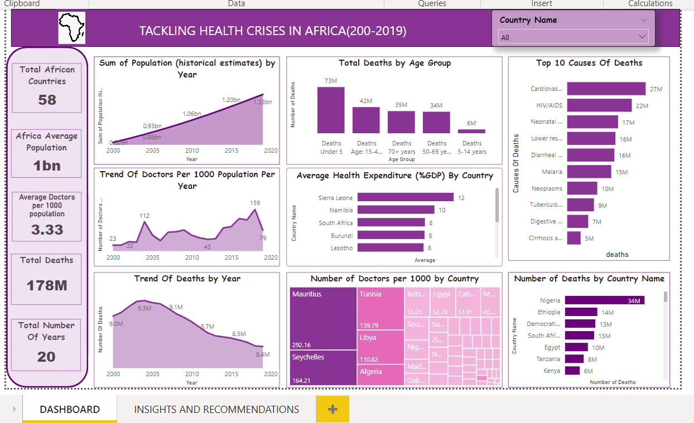

The lack of access to adequate medical resources and facilities have led to the significant number of deaths.
These data analysis process seeks to examine the health crises facing African countries based on the data provided,
create insights from the data and make required recommendations.


The Superstore dataset is a rich and comprehensive dataset containing information on the sales, orders, and customers of a fictional superstore. The dataset which was collected from kaggle provides a detailed view of the business operations of the superstore, including information on the products sold, the customers who purchase them, and the sales performance across different regions and categories with about 9,994 rows of data spanning four years (2014-2017),In this report, I perform python-based exploratory data analysis to gain insights about the fictional superstore.

The Behavioral Risk Factor Surveillance System (BRFSS) dataset is a collection of public health surveys conducted from 2011 to 2015.
The objective of the BRFSS is to collect state-specific data on health-related risk behaviors, chronic health conditions, and the use of preventive health services among U.S. residents.
Four variables were chosen to explore .I chose one of those four variables as the response variable and the other three as predictors, using R Programming, I cleaned the data, removed outliers, performed exploratory data analysis on each variables, doing appropraite visualization with ggplot2,Ran all of the appropriate basic descriptive statistics for each of the variables,Finally, ran at least 2 different, appropriate regressions predicting the variables using diiferent predictors, then identified he best model and discussed my observation and recommendations.

This project showcases a comprehensive analysis of Nigeria's external debts from 2016 to 2020, leveraging the power of Power Query and Power Pivot in Excel. The dashboard provides insightful visualizations and trends, enabling stakeholders to make informed decisions.

Designed and implemented a comprehensive database for a fictional bank called Apex Bank, encompassing various tables to manage employee, customer, and financial data.
Inserted sample data into each table to simulate real-world scenarios.Performed various SQL queries to extract insights, including:
Aggregate functions (average salary, total assets, etc.), Filtering and sorting (employees by salary, accounts by balance, etc.), Grouping and counting (employees by branch, customers by gender, etc.), Joining tables (customer information with account details, etc.)

This analysis evaluates the performance of sales managers of a company across different regions by examining key performance indicators (KPIs) using Excel. The analysis leverages data compiled from various sales transactions recorded between November 6, 2015, and November 10, 2015.

I led an in-depth analysis of sales data and inventory levels for a prominent pet food company. My objective was to uncover hidden trends, optimize product offerings, and streamline inventory management.
Objectives:
1. Uncover Top Performers: Identify the most popular products and brands driving sales growth.
2. Optimize Slow Movers: Pinpoint slow-moving products hindering inventory turnover.
3. Stock Value Insights: Analyze inventory stock values to inform strategic decisions.
4. Growth & Efficiency Strategies: Develop actionable recommendations for sales growth and inventory optimization.